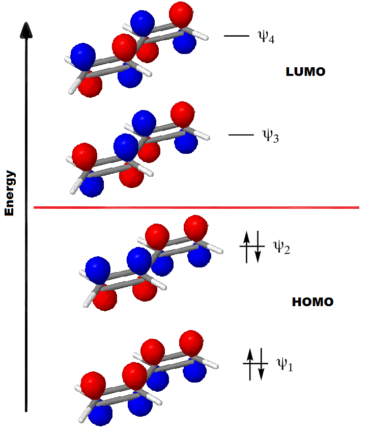

|

Click the orbital levels to view the molecular orbitals |
|

|
Manual
a) Select a molecule from above by clicking on it. b) Use labels/frame/connectivity to fill the elements of the secular matrix. c) Next slide will show the solution of the secular matrix. d) Click on the MO to explore it's orbitas. |
 |
 |
Different kinds of calculations require different kinds of input. But some items are to be specified in all the cases. The two most popular computer programs for carrying out ab initio quantum chemical calculations is the "Gaussian" and "Gamess" series.
Read More>> |